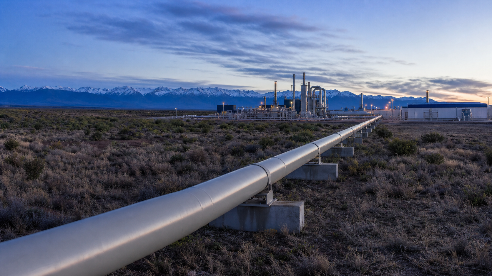

¿Qué es el gas natural?

El gas natural es una mezcla de hidrocarburos gaseosos, compuesta principalmente por metano (CH₄), junto con etano, propano y butano. Se forma por la descomposición de materia orgánica enterrada bajo capas de sedimentos durante millones de años, sometida a altas presiones y temperaturas.
Se extrae de yacimientos convencionales (donde el gas está atrapado en rocas porosas) y no convencionales (shale gas, atrapado en rocas de baja permeabilidad que requieren fractura hidráulica). Es el combustible fósil más limpio: emite aproximadamente un 50% menos de CO₂ que el carbón por unidad de energía generada.
El gas natural se transporta a través de gasoductos (en estado gaseoso) o se licúa (GNL, Gas Natural Licuado) para transportarlo en barcos criogénicos a -162°C. Argentina cuenta con una extensa red de gasoductos que conecta los yacimientos con los centros de consumo.
Usos del gas natural
El gas natural es la principal fuente de generación eléctrica en Argentina, utilizado en centrales de ciclo combinado (las más eficientes) y turbinas de gas. Genera más del 55% de la electricidad del país.
En los hogares, se usa para calefacción (calefactores, calderas), cocina (hornallas, hornos) y agua caliente sanitaria. Aproximadamente el 50% de los hogares argentinos utiliza gas natural por red. En el transporte, el GNC (Gas Natural Comprimido) es una alternativa más barata a la nafta: más de 1,5 millones de vehículos en Argentina usan GNC.
En la industria, se emplea en hornos, secadores, calderas y procesos de calentamiento. También es materia prima para la petroquímica (producción de fertilizantes, metanol, hidrógeno).
Rendimiento energético
Las centrales de ciclo combinado (que usan gas natural) alcanzan una eficiencia del 55-60%, las más altas entre todas las centrales térmicas. Las turbinas de gas simples tienen una eficiencia menor, del 30-40%. El poder calorífico del gas natural es de aproximadamente 38-43 MJ/m³.
El gas natural es el combustible fósil más eficiente y el de menor huella de carbono. Emite aproximadamente un 50% menos de CO₂ que el carbón y un 25% menos que el petróleo por unidad de energía generada.
Lugar en Argentina
La Cuenca Neuquina, donde se encuentra Vaca Muerta, es la mayor reserva de shale gas del mundo fuera de Estados Unidos. La Cuenca Austral (Tierra del Fuego) es el segundo productor de gas del país, y la Cuenca Noroeste (Salta, Jujuy) completa el panorama.
El Gasoducto Néstor Kirchner (Trayecto A: Neuquén → Buenos Aires, 573 km) fue inaugurado en 2023 y permite transportar gas desde Vaca Muerta hasta los centros de consumo del Área Metropolitana de Buenos Aires. El Gasoducto Perito Moreno (Trayecto B) se encuentra en construcción para ampliar aún más la capacidad de transporte.
Argentina produce aproximadamente 140 millones de metros cúbicos de gas por día. Es autosuficiente desde 2023 gracias a Vaca Muerta, y exporta gas a Chile y Brasil.
El gas en la matriz energética
El gas natural genera aproximadamente el 55% de la electricidad argentina, lo que lo convierte en la principal fuente de generación. Representa alrededor del 50% de la energía primaria consumida en el país.
Argentina produce aproximadamente 140 millones de metros cúbicos de gas por día. Es autosuficiente desde 2023 gracias al desarrollo de Vaca Muerta. El gas asegura el abastecimiento durante los picos de demanda invernal por calefacción.
Se exporta gas a Chile y Brasil a través de gasoductos internacionales. La producción de Vaca Muerta ha transformado la balanza energética argentina, reduciendo la necesidad de importar gas natural licuado (GNL) a precios internacionales.
Implicancia real
Vaca Muerta es la mayor oportunidad energética de Argentina desde el descubrimiento del petróleo. El Gasoducto Néstor Kirchner redujo significativamente la necesidad de importar GNL (Gas Natural Licuado), mejorando la balanza comercial del país.
Argentina podría convertirse en exportador neto de gas a largo plazo, aprovechando las enormes reservas de Vaca Muerta. Sin embargo, el fracking (fractura hidráulica) necesario para extraer shale gas es controversial por el uso intensivo de agua, los productos químicos involucrados y el riesgo de sismicidad inducida.
Las fugas de metano a lo largo de la cadena de producción y transporte son un riesgo ambiental significativo: el metano tiene un efecto invernadero aproximadamente 80 veces más potente que el CO₂ en un horizonte de 20 años. Controlar estas fugas es uno de los principales desafíos de la industria.
Ventajas y desventajas
Ventajas
- El más limpio de los combustibles fósiles (menor emisión de CO₂)
- Abundante en Argentina gracias a Vaca Muerta
- Versátil: electricidad, calefacción, industria, GNC
- Infraestructura de gasoductos desarrollada
- Centrales de ciclo combinado muy eficientes (55-60%)
Desventajas
- Es fósil: emite CO₂ al quemarse
- Fugas de metano (efecto invernadero 80x más potente que el CO₂)
- Fracking consume mucha agua y puede contaminar acuíferos
- Es finito a largo plazo (recurso no renovable)
- Explosivo: riesgo de escapes y explosiones